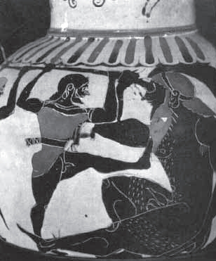
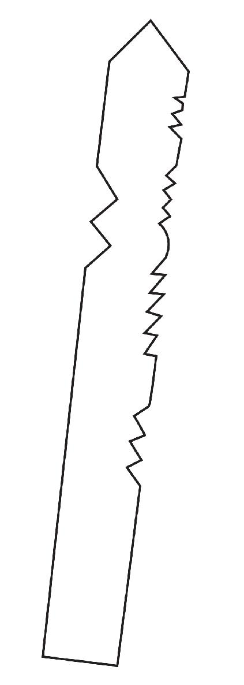
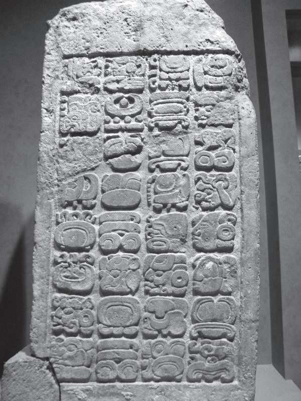
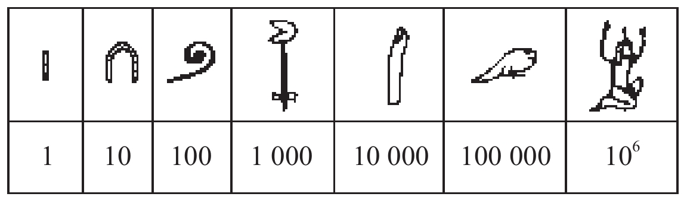
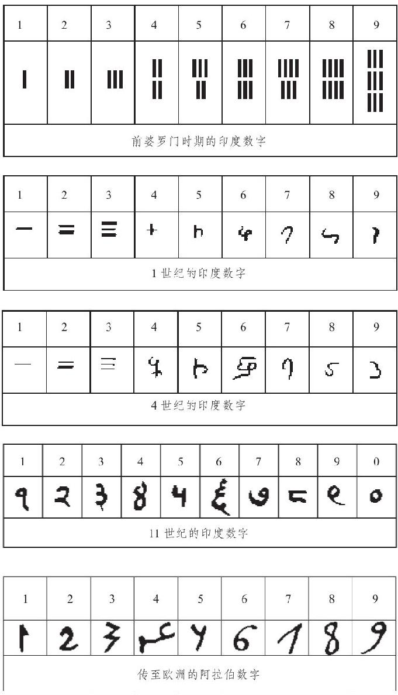
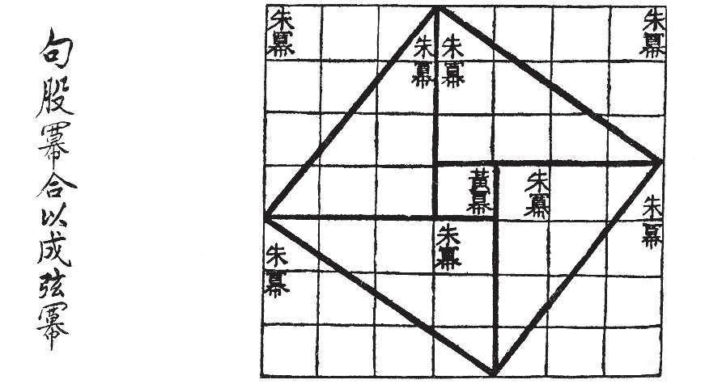

如同古代世界的许多伟人一样，数学史上的先驱人物也消失在历史的迷雾中。然而，数学每前进一步，都伴随着人类文明的一次进步。亿万年前，居住在岩洞里的原始人就有了数的概念，在为数不多的事物（比如，食物）中间增加或取出几个同样的事物，他们能分辨出多和少（不少动物也具有这类意识）。本来，对食物的需求出自人类的生存本能。慢慢地，人类就有了明确的数的概念：1，2，3，…。正如部落的头领需要知道他手下有多少成员，牧羊人也需要知道他拥有多少只羊。
在有文字记载以前，计数和简单的算术就发展起来了。猎人知道，把2枚箭矢和3枚箭矢放在一起就有了5枚箭矢。就像不同种族称呼家庭主要成员的声音大同小异一样，人类最初的计数方法也是相似的。例如，当数羊的只数时，每有一只羊就扳一个手指头。后来，才逐渐衍生出三种有代表性的计数方法，即石子计数（有的是用小木棍）、结绳计数和刻痕计数（在土坯、木头、石块、树皮或兽骨上），这样不仅可以记录较大的数字，也便于累计和保存。
在古希腊诗人荷马的长篇史诗《奥德赛》中有这样一则故事：主人公奥德修斯刺瞎了独眼巨人波吕斐摩斯仅有的一只眼睛以后，那个不幸的盲老人每天都坐在自己的山洞里照料他的羊群。早晨羊儿外出吃草，每出来一只，他就从一堆石子里捡出一颗。晚上羊儿都返回山洞，每进去一只，他就扔掉一颗石子。当他把早晨捡起的石子全都扔光时，就确信所有的羊儿都返回了山洞。这则故事告诉我们，很可能是牧羊人计算羊群只数的方法催生了数学，正如诗歌起源于乞求丰收的祷告，这两项人类最古老的发明均源于生存的需要。

陶罐上的图画：奥德修斯刺瞎独眼巨人
说来有点儿残酷，一些美洲印第安人通过收集被杀者的头皮来计算他们杀敌的数目，而一些非洲的原始猎人则通过积累野猪的牙齿来计算他们杀死野猪的数目。据说，居住在乞力马扎罗山坡上游牧民族的少女习惯在颈上佩戴铜环，铜环的个数等于她们的年龄，这比起如今缅甸某些少数民族的妇女所保持的相似习俗来，多了审美以外的含义。从前，英国酒保往往用粉笔在石板上画记号来计数顾客饮酒的杯数，而西班牙酒保则通过向顾客的帽子里投放小石子来计数，这两种不同的计数方法似乎也反映出这两个民族不同的个性：谨慎和浪漫。
后来，就产生了各种各样的语言，包括对应于大小不同的数的语言符号。再后来，随着书写方式的改良，就形成了代表这些数的书写符号。最初，在诸如两只羊和两个人所用的语音和用词也是不同的。例如，在英语中使用过team of horses（共同拉车或拉犁的两匹马），yoke of oxen （共轭的两头牛），span of mules（两只骡），brace of dogs（一对狗），pair of shoes（一双鞋），等等。至于汉语里的量词变化，那就更多了，且一直保留至今。
可是，人类把数2作为共同性质抽象出来，并采用与大多数具体事物无关的某个语音来替代它，或许经过了很长时间。如同英国哲学家兼数学家伯特兰·罗素（B.Russell，1872—1970）所说的，“当人们发现一对雏鸡和两天之间有某种共同的东西（数字2）时，数学就诞生了。”而在我们看来，数学的诞生或许要晚一点儿，是在人们从“2只鸡蛋加3只鸡蛋等于5只鸡蛋，2枚箭矢加3枚箭矢等于5枚箭矢，等等”中抽象出“2+3=5”之时。
当人们需要进行更广泛深入的数字交流时，就必须将计数方法系统化。世界各地的民族不约而同地采取了以下方法：把从1开始的若干连续的数字作为基本数字，以它们的组合来表示大于这些数字的数。换言之，如果大于1的某个数b作为计数的进位制或基（base），并确定出数目1，2，3，…，b的名称，则任何大于b的数均可以用这b个数的一个组合表示。
有证据表明，2、3和4都曾被当作原始的数基。例如，澳大利亚北部昆士兰州的原住民是这么计数的：1，2，2和1，两个2，…。某些非洲矮人部落是这样命名最前面的6个自然数的，“a，oa，ua，oaoa，oa-oa-a，oa-oa-oa。”这两种计数方法均为二进制，它的应用后来促进了电子计算机的发明。而阿根廷最南端火地岛的一个部落和南美洲其他一些部落则分别以数字3和4为基。
不难设想，由于人类的每只手有5个手指，每只脚有5个脚趾，五进制一度得到了广泛的应用。至今某些南美洲部落仍用手计数：1，2，3，4，手，手和1，等等。直到1880年，德国的农历仍以5为数基。1937年，在捷克共和国摩拉维亚地区出土的一块幼狼胫骨上，几十道刻痕明显是以五进制方式排列的。西伯利亚的尤卡吉尔人居住在世界上最寒冷的地方（勒拿河下游），至今仍采用一种类似于五进制和十进制混合的方式计数。

英国人使用过的木片账目
12也常被用作数基。如同美国数学史家英国人使用过的木片账目伊夫斯（H.W.Eves，1911—2004）所分析的，这可能与它能被6个数整除有关，也可能是因为一年有12个朔望月。例如，1英尺 [1] 有12英寸 [2] ，1英寸有12英分，1先令是12便士，1英镑是12盎司（金衡制，常衡制是16盎司）。有意思的是，直到20世纪80年代，中国乡村的秤还同时刻有两种进制：十进制和十六进制。此外，没有十二进制的中国人的文字里也有“打”，而英语里除了dozen（打）以外，还有gross（箩），一箩等于12打。

《德累斯顿抄本》的原始石碑，内含玛雅人的“2012末日预言
二十进制也曾被广泛使用，它使我们想起人类的赤脚时代，一双手和一双脚共20个指头。美洲印第安人使用过它，其中包括高度发达的玛雅文明，这被记载在著名的三大玛雅典籍中：《德累斯顿抄本》、《马德里抄本》、《巴黎抄本》。其中《德累斯顿抄本》的数学内容最多，它来源于12世纪的石碑。抄本中有些内容涉及气候和雨季的预测。最后一页警示人们留意世界末日的来临，即广为流传的“2012末日预言”，甚至有场景描述，设想由鳄鱼引发的一场洪水将毁灭整个世界。此抄本于1739年由德累斯顿宫廷图书馆于维也纳购得，“二战”结束前德国德累斯顿市毁于盟军的炮火，抄本也付之一炬，现存的是19世纪的副本。
值得一提的是，在法语里，至今仍在用4个20来表示80（quatrevingts），4个20加10来表示90（quatre-vingt-dix），丹麦人、威尔士人和盖尔人的语言中也存在这一痕迹。令人惊奇的是，这些地方并不都是温带。在英语里20（score）是一个常用字，且是一个计量单位，汉语里也有“廿”。至于公元前2000年巴比伦人就已使用的六十进制，今天仍在时间和角度计量单位中不可或缺。
可是，人类最终仍普遍接受了十进制。在有记载的历史中，包括古埃及的象形数字、古代中国的甲骨文数字和算筹数字、古希腊的阿提卡数字、古印度的婆罗门数字，等等，都采用了十进制。在我们的头脑里，“十”已成为数制的必然单位，正如“二”已被电脑特别拥有。原因十分简单，博学的希腊哲学家亚里士多德已经为我们指出，“十进制被广泛采纳，只不过是由于我们绝大多数人生来具有10个手指这样一个解剖学的事实。”

古埃及的象形数字
除了口说以外，用手指表达数也曾长期被采纳。英语里的digit原本是指手指或脚趾，后来才表示从1到9这些数字，如今我们正处于数字时代（digital age）。事实上，原始人甚或开化的人，在进行口头计数时往往会同时做出一些手势。例如，当说到“十”字时，会用一只手拍另一只手的手心。对于某些部落或民族，我们可以通过观察他们计数时的手语来判断其归属。在今天的中国，我们仍然可以通过一个人划拳的手势大致弄清楚他或她究竟来自哪个地区或省份。
据考古学发现，刻痕计数大约出现在3万年以前，经过极其缓慢的发展，大约在公元前3000多年，终于出现了书写计数和相应的数系。可能是受手指表达数的影响，最早表示数1、2、3和4的书写符号大多是相应数目的竖或横的堆积。前者有古埃及的象形文字、古希腊的阿提卡数字、古代中国的纵式筹码数字和玛雅数字，后者有古代中国的甲骨文数字、横式筹码数字和古印度的婆罗门数字（数4例外）。
有意思的是，以上提到的受手指影响用竖或横来表达前4个数的数系均不约而同地采用了十进制，而另外两种著名的数系，即古巴比伦的楔形数字和玛雅数字，分别用一个个锐利的小等腰三角形和小圆点来表示，却采用了六十进制和二十进制。在数5和5以后，即使同属竖写的数系也有不同的表达法，以10为例，古埃及人用轭或踵骨∩（集合论中的“交”）表示，古希腊人用△（第4个希腊字母）表示，而中国人则用4个竖上面加1横表示。
所谓阿拉伯数系，是指由0，1，2，3，…，9这10个数字及其组合表示的十进制数字书写体系。例如，在911这个数中，右边的1表示1，中间的1却表示1乘以10，而9则表示9乘以100。在今天世界上存在的数以千计的语言系统里，这10个阿拉伯数字是唯一通用的符号（比拉丁字母的使用范围更广）。可以想象，假如没有阿拉伯数系，全球范围内的科技、文化、政治、经济、军事和体育等方面的交流将变得十分困难，甚至不可能进行。
阿拉伯数系也被称为印度—阿拉伯数系，这是因为它是印度人发明的，经由阿拉伯人改造后传递到西方。后一项文明的流通是在12世纪完成的，前一项发明的起源就不得而知了，只是由于近代考古学的进展，在印度的一批石柱和窑洞的墙壁上发现了这些数字的痕迹，其年代在公元前250年到公元200年之间。值得一提的是，那些痕迹里并没有零这个符号，而在公元825年前后，阿拉伯人花拉子密的著作《印度的计算术》里却描述了已经完备的印度数系，今天英文和德文里的零就是依据阿拉伯文音译的。
阿拉伯数字是随着阿拉伯人鼎盛时期的远征传入北非和西班牙的，一位叫斐波那契的意大利人曾受教于西班牙的穆斯林数学家，还曾游历北非。他回到意大利以后，于1202年出版了一部数学著作，这是阿拉伯数字传入穆斯林以外的欧洲的里程碑，对稍后的意大利文艺复兴时期的数学发展有一定的促进作用。有意思的是，也是在13世纪，威尼斯人马可·波罗（Marco Polo，1254—1324）实现了欧洲人对东方的首次访问。其时横跨欧亚两个大陆的君士坦丁堡（今土耳其伊斯坦布尔）是一个战乱纷争之地，这位旅行家也是经由北非和中东绕过地中海，不过是沿着与阿拉伯数字传播路线相反的方向。

数系的出现使得数的书写和数与数之间的运算成为可能。在此基础上，加、减、乘、除乃至于初等算术便在几个古老的文明地区发展起来，而后来数系的统一又为世界数学的发展和应用插上了翅膀。与数的概念的形成一样，人类最初的几何知识也是从他们对形的直觉中萌发出来的。例如，不同种族的人都注意到了圆月和挺拔的松树在形象上的区别。可以想见，几何学便是建立在对这类从自然界提取出来的“形”的总结的基础之上。
一条直线只是一段拉紧了的绳子，来自希腊文的英文Hypotenuse（斜边）的原意就是“拉紧”。我们可以设想，这是将一个直角的两臂拉紧后的连线，于是arms（手臂）就成了两条直角边。如此看来，三角形的概念是人们通过对自己身体的观察得到的。巧合的是，在古代中国也是这样，勾、股在作为小腿和大腿的同时也是直角三角形中较短和较长的直角边，因而我们才有“勾股定理”的说法。在西安半坡出土的陶器残片上，我们可以看到完整的全等三角形图案，每条边由间隔相等的8个小孔连接而成。在埃及旧都底比斯出土的古墓壁画中，也有直线、三角形和弓形等图案。同样，圆、正方形、长方形等几何图形的概念也来自人们的观察和实践。
正如古希腊历史学家希罗多德（Herodotus，约公元前480—约前425）所指出的，埃及的几何学是“尼罗河的馈赠”。早在公元前14世纪，埃及的国王便将土地分封给所有的国民，每个人都得到一块同等面积的土地，然后据此纳税。如果每年春天的尼罗河洪水冲毁了某个人的土地，他就必须向法老报告所受的损失。法老会派专人来测量这个人所失去的土地，再按相应的比例减税。这样一来，几何学（geometry）就产生并发展起来了，geo意指土地，metry是测量。这类专门负责测量土地的人有专门的称谓，叫作“司绳”（rope-stretcher）。
巴比伦人的几何学也是源于实际的测量，它的重要特征是其算术性质。至少在公元前1600年，他们就已熟悉长方形、直角三角形、等腰三角形和某些梯形的面积计算方法了。古印度几何学的起源则与宗教和建筑实践密切相关，公元前8世纪至2世纪产生的《绳法经》，便涉及祭坛与寺庙建造中的几何问题及其求解。而在古代中国，几何学的起源更多地与天文观测相联系，大约在公元前1世纪成书的《周髀算经》便讨论了天文测量用到的几何方法。

《周髀算经》里的弦图，用以说明边长（3，4，5）的三角形满足勾股定理
[1] 1英尺≈0.305米。——编者注
[2] 1英寸≈0.025米。——编者注